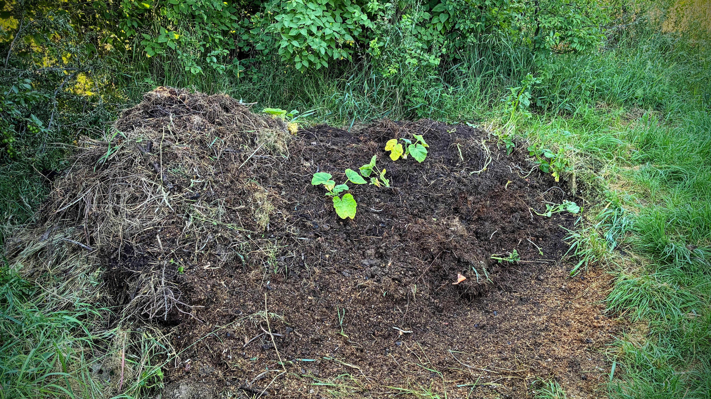
Alchymie: Kompostujeme a tlíme
O domácím kompostu, zahradě a životním cyklu hmoty

O domácím kompostu, zahradě a životním cyklu hmoty
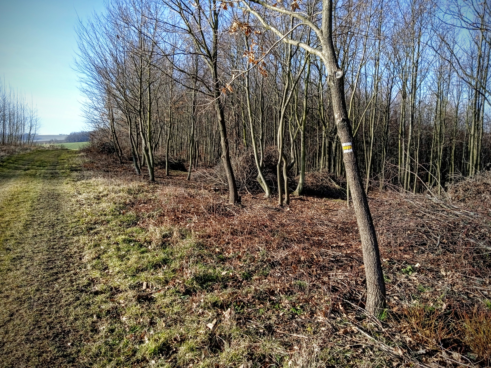
Dnes jsem na své oblíbené potulkové trase objevil žluté čtverečky.

Včera se mi cestou na kole z nákupu podařilo zastavit na hezkém místě u řeky. Původně jsem si tady chtěl zacvičit jógu, ale nakonec jsem si dal jen plechovku piva, seděl jsem a koukal na řeku.
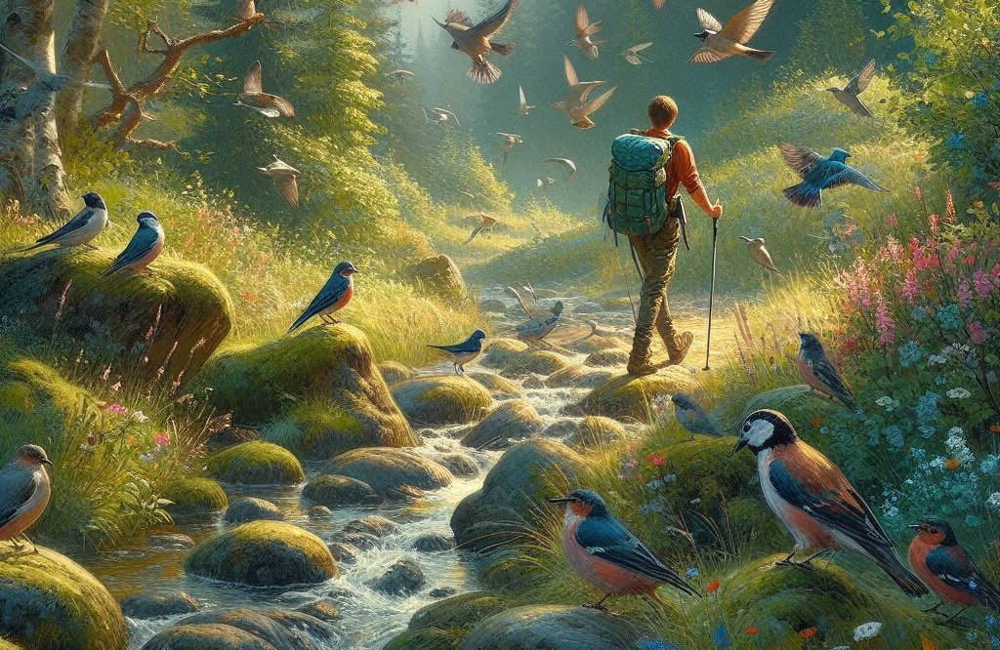
Poslední dobou moc neběhám ani nejezdím na kole. Obě pohybové aktivity jsem nahradil Nordic Walkingem, tedy chůzí s hůlkama. Ale ne, není to ta důchodcovská varianta chůze s oporou o hůlky (i když proti té nic).
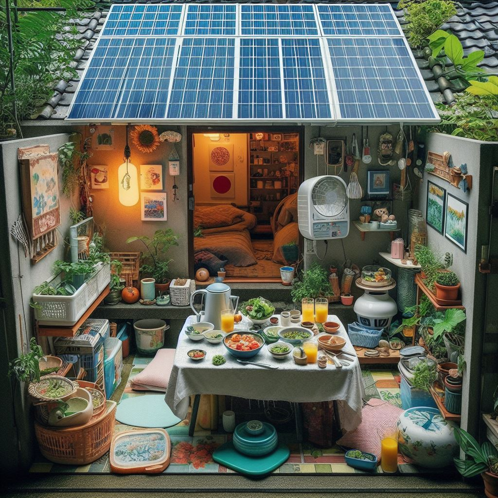
Přivedly mě na to úvahy o modrých zónách. Století lidé na Okinawě žijí klidně, skromně, hodně se hýbou a nepodceňují společenský život. Co je ale zajímavé, mají obvykle jen malý soukromý prostor (což je Japonsku ostat...
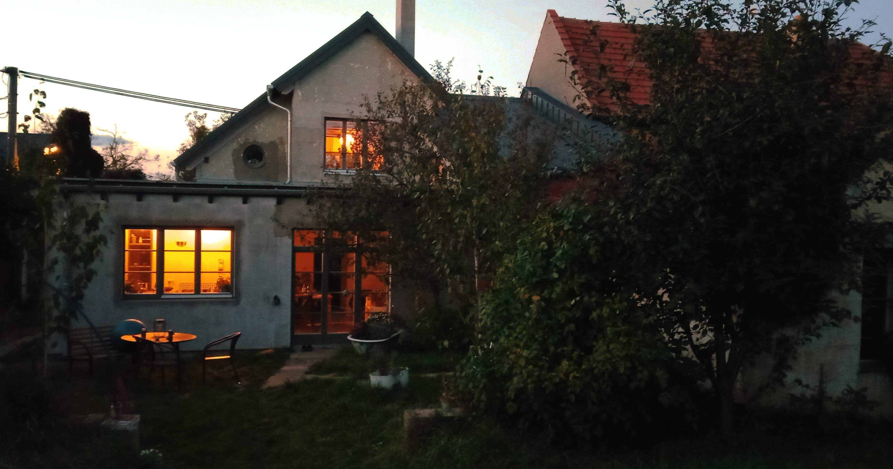
O energetické investici do místa a tom, jak vám místo začne vracet energii zpět
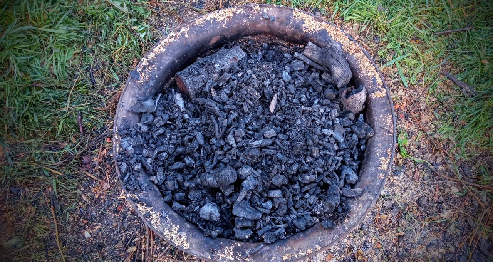
Jak jsme vyráběli biouhel ze zahradního odpadu

Podzimní bilancování zahrady a přípravy na zimu
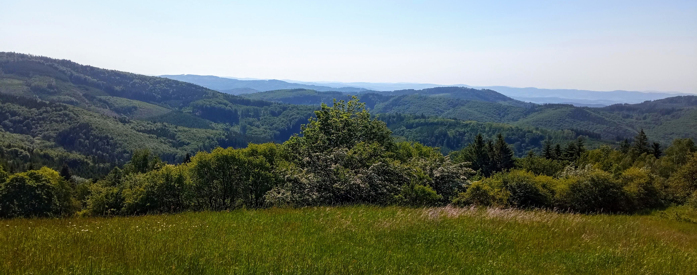
Sólový výlet do Hostýnských vrchů s přerušovaným půstem
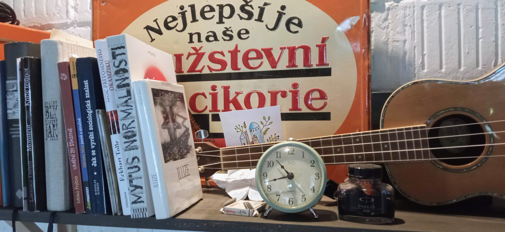
O vytvoření pracovního místa a o tom, jak lépe zvládat zimu na venkově

První sněžení a jeho uklidňující efekt

O rozdílu mezi zvlněnou krajinou pod Větřákem a rovinou u Hulína
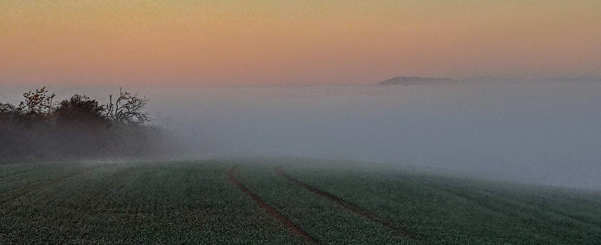
O překvapivém výstupu nad mlhu na Větřák a pohledu na Hostýn
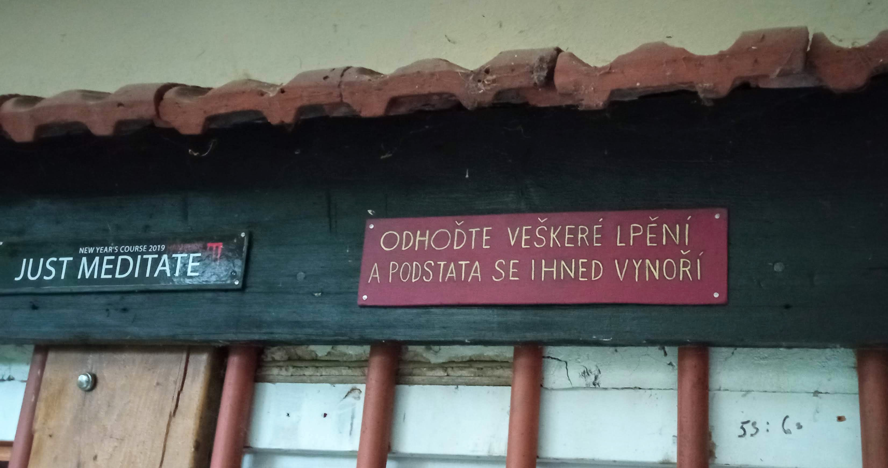
O důležitosti vědomého opakování a tvorbě návyků
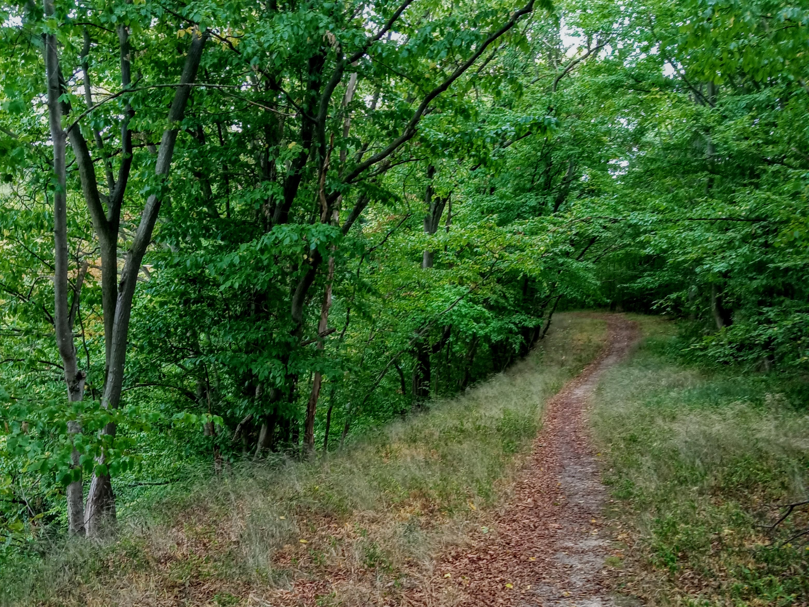
O radosti z toho, že u něčeho nemusíte být

Úvahy o hraničních tělesných experimentech, touze po transcendenci a poustevnickém životě
Zkušenosti a poznatky z otevřené lekce Ido Portal Method ve Zlíně

Reflexe turbulentního března z pohledu domova, zahrady a samozásobitelství
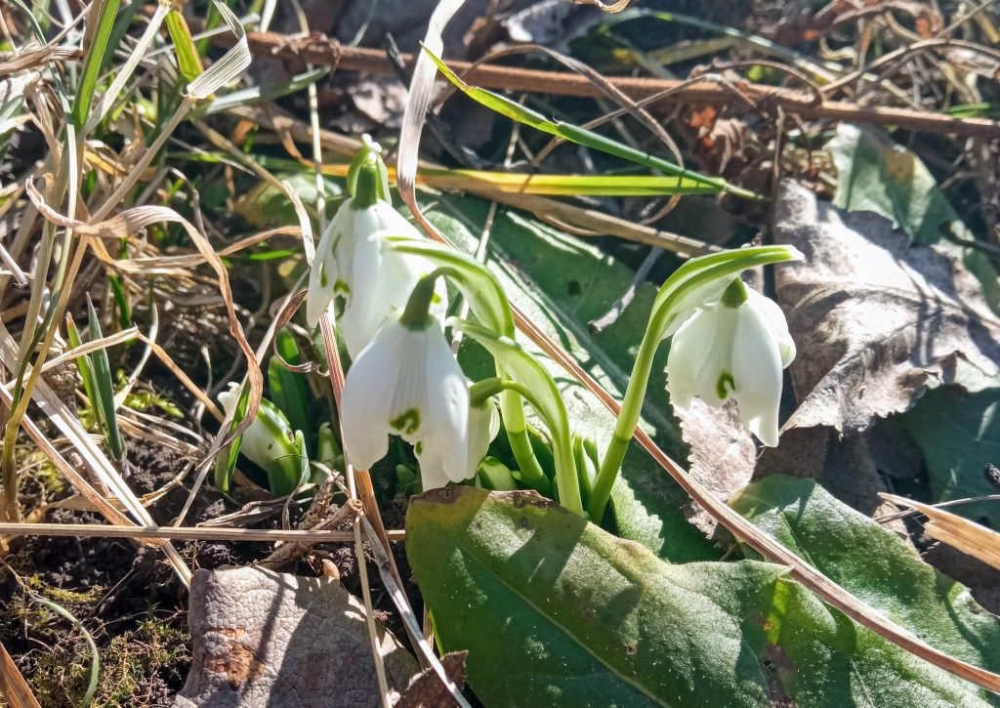
Únor jako ideální plánovací období pro zahradničení a život na venkově

Celkově letošní zimu opět zvládáme trochu líp, než tu předchozí. Ale stále je prostor, co vylepšit. Proč o tom pořád píšu? Řeknu vám drobné tajemství.
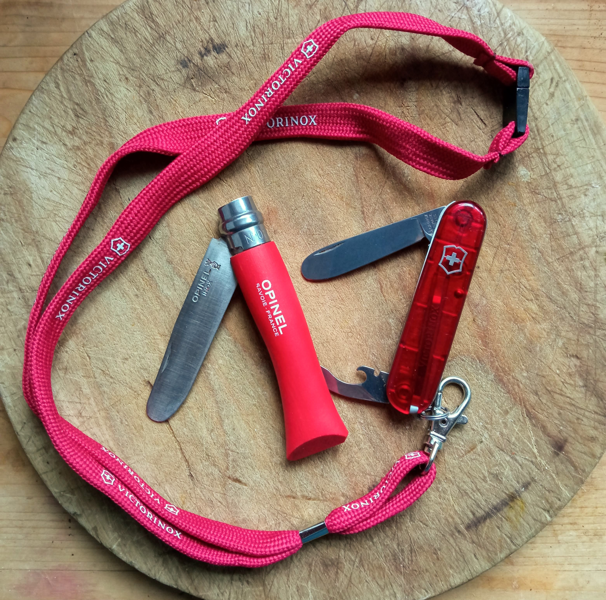
Proč by děti měly ve věku pěti let dostat svůj první nůž a naučit se s ním zacházet

Zkušenosti s jogínskou technikou šankaprakšalány - očistou trávicího traktu
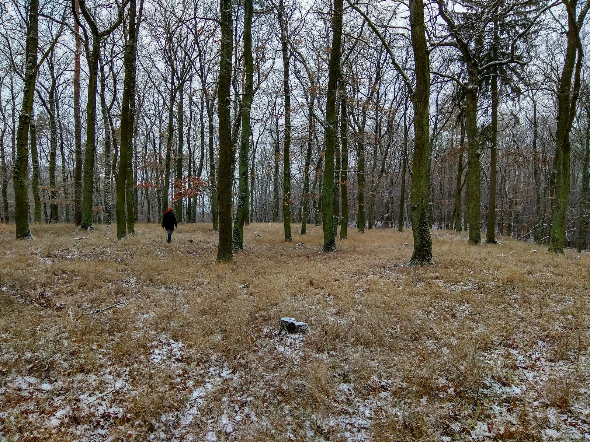
Zimní návštěva místa bývalého středověkého hradu Vildenberk
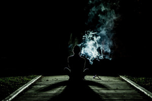
Zkušenosti a reflexe šamanského ceremoniálu s rapé